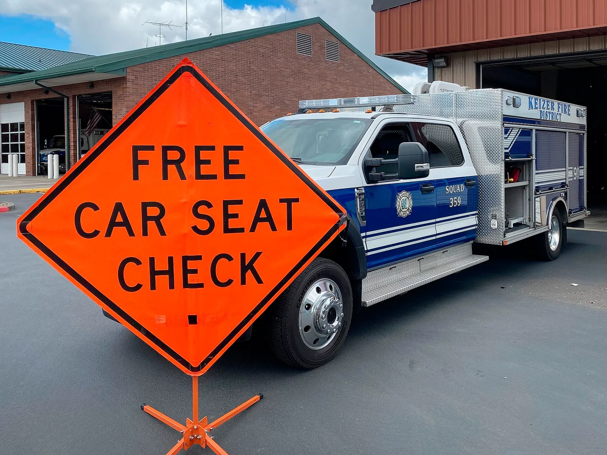

▲ ISOFIX 방식으로 장착된 카시트. 도로교통법은 6세 미만 유아에게 유아보호용 장구 장착을 의무화하고 있다
도로교통법 제50조는 6세 미만 유아를 태울 때 유아보호용 장구를 장착한 뒤 좌석안전띠를 매도록 하고 있습니다.
위반하면 과태료 6만 원입니다. 일반 안전띠 미착용(3만 원)의 두 배입니다.
그런데 "6세가 되면 카시트를 떼도 되는가"라는 질문에는, 법과 안전이 서로 다른 답을 내놓습니다.
1. 법이 정한 것 — 6세 미만
도로교통법 제50조는 운전자에게 동승자의 좌석안전띠 착용 의무를 지우면서, 6세 미만 유아에 대해서는 유아보호용 장구를 장착한 후 안전띠를 매도록 규정하고 있습니다.
위반 시 과태료는 6만 원입니다. 부과 대상은 운전자입니다. 아이의 보호자가 따로 타고 있어도 마찬가지입니다.
비교해보면 기준이 보입니다.
| 상황 | 과태료 |
|---|---|
| 6세 미만 유아보호용 장구 미장착 | 6만 원 |
| 동승자가 13세 미만인데 안전띠 미착용 | 6만 원 |
| 그 외 동승자 안전띠 미착용 | 3만 원 |
13세 미만이라는 기준이 여기서 한 번 더 나옵니다. 카시트 의무는 6세 미만이지만, 안전띠 미착용 과태료는 13세 미만에서 이미 두 배로 잡혀 있습니다. 법도 어린이를 성인과 다르게 보고 있다는 뜻입니다.
2. 왜 성인용 안전띠는 아이에게 위험한가
이 부분을 이해하면 "6세면 이제 됐다"가 왜 성급한지가 분명해집니다.
좌석안전띠는 성인 체격을 전제로 설계돼 있습니다. 정상적으로 착용되면 어깨띠는 쇄골 위, 허리띠는 골반뼈 위에 걸립니다. 충돌 에너지를 뼈가 단단한 부위로 받게 하기 위해서입니다.
체구가 작으면 이 위치가 어긋납니다.
- 어깨띠가 목에 걸린다 — 불편해서 아이가 겨드랑이 아래나 등 뒤로 빼는 경우가 많다. 그러면 상체 구속이 사라진다.
- 허리띠가 배 위로 올라간다 — 골반이 아니라 복부를 누르게 된다. 충돌 시 내부 장기 손상 위험이 커진다.
부스터 시트가 필요한 이유가 여기 있습니다. 부스터는 아이를 위로 올려 안전띠가 제 위치에 걸리게 만드는 장치입니다. 구속하는 것이 아니라 자세를 맞추는 것입니다.

▲ 카시트는 장착 자체보다 벨트 경로와 각도가 맞는지가 중요하다 ⓒ Oregon Department of Transportation, Wikimedia Commons (CC BY 2.0)
3. 나이보다 키 — 실제 판단 기준
전문가들이 공통적으로 말하는 기준은 나이가 아니라 체격입니다.
안전띠만으로 충분한지를 확인하는 방법은 단순합니다. 아이를 뒷좌석에 등받이에 등을 붙이고 앉힌 뒤 확인합니다.
- 무릎이 시트 끝에서 자연스럽게 접히는가 — 다리가 뜨면 아직 이르다
- 어깨띠가 목이 아니라 어깨 중앙을 지나는가
- 허리띠가 배가 아니라 골반에 걸리는가
- 주행 내내 그 자세를 유지할 수 있는가 — 자세가 무너지면 보호 효과도 무너진다
네 가지가 모두 충족될 때 보호장구를 졸업하는 것이 안전 관점의 기준입니다. 같은 6세라도 아이마다 시점이 다릅니다.
앉는 자리도 중요합니다. 가능하면 뒷좌석이 원칙입니다. 조수석은 에어백이 전개될 때 아이에게 강한 충격을 줄 수 있어 권장되지 않습니다.
특히 후향식(뒤보기) 카시트를 조수석에 두는 것은 매우 위험합니다. 에어백이 카시트 뒷면을 직접 때리게 되기 때문입니다.

▲ 카시트 졸업 시점은 나이가 아니라 안전띠가 몸에 제대로 걸리는지로 판단한다
4. 장착에서 가장 흔한 실수
카시트를 샀다고 끝이 아닙니다. 잘못 장착된 카시트는 보호 성능이 크게 떨어집니다.
- 고정이 헐겁다 — 장착 후 카시트를 잡고 흔들었을 때 좌우로 크게 움직이면 다시 조여야 한다.
- ISOFIX 커넥터가 완전히 물리지 않았다 — 딸깍 소리와 함께 표시창이 녹색으로 바뀌는지 확인한다.
- 상단 고정끈(탑테더)을 안 걸었다 — 전방 충돌 시 머리가 앞으로 튀어나가는 정도를 줄여주는 부분이다.
- 하네스가 느슨하다 — 어깨끈과 아이 몸 사이에 손가락 두 개 이상 들어가면 느슨한 것이다.
- 두꺼운 외투를 입힌 채 채웠다 — 겨울에 특히 흔하다. 충돌 순간 옷이 눌리면서 실제 구속이 헐거워진다. 벨트를 채운 뒤 담요를 덮는 편이 낫다.
- 등받이 각도가 맞지 않다 — 영아는 각도가 서면 기도가 막힐 수 있다.
중고 카시트는 신중해야 합니다. 사고 이력이 있는 카시트는 겉이 멀쩡해도 내부 구조가 손상됐을 수 있고, 플라스틱은 시간이 지나면 약해집니다.

▲ 해외에서는 카시트 장착 점검 행사가 운영되기도 한다. 장착 오류가 그만큼 흔하다는 뜻이다 ⓒ Oregon Department of Transportation, Wikimedia Commons (CC BY 2.0)
5. 예외와 자주 나오는 질문
택시나 버스는 어떻게 하나. 흔히 "택시는 카시트 의무가 없다"고 알려져 있지만 정확한 이야기는 아닙니다. 도로교통법 시행규칙 제31조가 정한 예외는 여객운송사업용 차량의 운전자가 승객에게 착용을 안내했는데도 승객이 매지 않은 경우 등으로, 운전자의 책임을 면해주는 성격에 가깝습니다.
즉 "아이를 그냥 안고 타도 된다"는 뜻이 아닙니다. 보호장구 없이 이동하는 것이 위험하다는 사실 자체는 달라지지 않습니다. 장거리 이동이라면 휴대용 부스터를 챙기는 편이 낫습니다.
렌터카는 어떻게 하나. 대부분의 렌터카 업체가 카시트 대여 옵션을 운영합니다. 예약 시 신청하면 됩니다. 다만 연령대에 맞는 제품인지, 장착 상태가 정상인지는 직접 확인해야 합니다.
아이가 카시트를 거부한다면. 가장 흔한 현실적 문제입니다. 각도·시트 온도·벨트 위치가 원인인 경우가 많습니다. 무조건 억지로 채우기보다 원인을 찾는 편이 장기적으로 낫습니다.
차에 아이를 두고 내리는 사고도 매년 반복됩니다. 뒷좌석 승객 알림 기능에 대해서는 별도로 정리해둔 기사가 있습니다.
6. 정리
도로교통법 제50조에 따라 6세 미만 유아는 유아보호용 장구를 장착한 뒤 좌석안전띠를 매야 하며, 위반 시 과태료 6만 원이 운전자에게 부과됩니다.
6세 이상이라도 체격이 작으면 성인용 안전띠가 오히려 위험합니다. 어깨띠가 목에 걸리거나 허리띠가 복부를 누르기 때문입니다. 졸업 기준은 나이가 아니라 안전띠가 어깨와 골반에 제대로 걸리는지입니다.
자리는 뒷좌석이 원칙이며, 특히 후향식 카시트를 조수석에 두는 것은 위험합니다. 장착 후에는 흔들림, 하네스 여유, 두꺼운 외투를 반드시 확인해야 합니다.